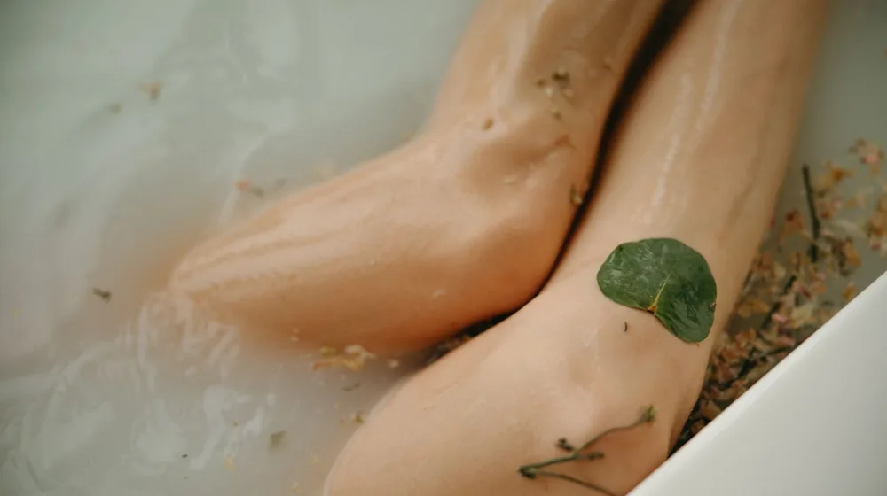

첫 한방 스파, 후회 없이 즐기는 5가지 팁과 주의할 점
사진: Optical Chemist / Pexels (무료 이미지, 출처 표기)
한방 스파, 일반 스파와 어떤 차이가 있을까?

일상의 피로를 풀기 위해 스파를 찾는 분들이 많습니다. 그중에서도 '한방 스파'는 일반적인 아로마 스파와 달리 우리 몸의 전통적인 치유 원리에 기반을 둡니다. 일반 스파가 아로마 오일과 서양식 마사지를 통해 심신 이완과 향기 요법에 중점을 둔다면, 한방 스파는 한약재, 뜸, 부항 등 동양 의학적 요소를 접목하여 체질 개선과 기혈 순환에 집중합니다.
특히 한방 스파는 단순히 몸을 풀어주는 것을 넘어, 개개인의 체질과 건강 상태에 맞춰 프로그램을 구성하는 경우가 많습니다. 전문가의 간단한 상담을 통해 나에게 맞는 약재나 관리 방법을 추천받을 수 있다는 점이 큰 특징입니다. 이를 통해 단순한 휴식 이상의 근본적인 건강 증진 효과를 기대할 수 있습니다.
나에게 딱 맞는 한방 스파, 이렇게 골라보세요
다양한 한방 스파 중 나에게 최적의 경험을 선사할 곳을 고르려면 몇 가지 기준을 세우는 것이 좋습니다. 가장 먼저 어떤 목적(피로 해소, 피부 관리, 특정 부위 통증 완화 등)으로 스파를 이용하는지 명확히 하고, 그에 맞는 프로그램을 제공하는 곳을 찾아야 합니다.
스파의 전문성 또한 중요합니다. 한의원과 연계하여 운영되거나, 전문 한의사가 상주하여 개인별 체질 진단과 맞춤형 관리를 제공하는 곳은 더욱 신뢰할 수 있습니다. 방문 전 온라인 후기와 평판을 꼼꼼히 확인하여 다른 이용자들의 경험을 참고하는 것도 좋은 방법입니다. 2026년 11월 기준으로, 대부분의 스파는 공식 홈페이지나 예약 플랫폼에서 상세한 프로그램 정보와 후기를 제공하고 있습니다.
아래는 한방 스파의 대표적인 프로그램 유형과 그에 따른 기대 효과를 정리한 표입니다.
한방 스파 이용 후 기대할 수 있는 효과
한방 스파는 단순히 몸의 긴장을 풀어주는 것을 넘어 다양한 긍정적인 효과를 가져다줍니다. 한약재의 유효 성분이 피부를 통해 흡수되거나 증기를 통해 호흡기로 전달되면서, 스트레스 완화와 면역력 증진에 도움을 줄 수 있습니다.
또한, 약초 목욕이나 뜸 요법은 혈액순환을 개선하고 뭉친 근육을 이완시켜 근육통 완화에 효과적입니다. 따뜻한 약재 증기는 피부 노폐물 배출과 영양 공급을 돕고, 숙면을 유도하여 전반적인 신체 컨디션을 회복하는 데 기여합니다. 개인의 체질과 건강 문제에 맞춘 관리를 통해 더욱 효율적인 효과를 기대할 수 있습니다.
첫 방문 전 반드시 알아야 할 주의사항
한방 스파를 안전하고 효과적으로 이용하려면 몇 가지 주의사항을 미리 숙지하는 것이 중요합니다. 특히 임산부, 고혈압, 당뇨병, 심혈관 질환 등 특정 건강 상태를 가진 분들은 반드시 스파 이용 전 전문가와 상담하여 자신의 몸에 맞는 프로그램인지 확인해야 합니다.
특정 한약재에 대한 알레르기 반응이 있을 수 있으니, 스파 관리사에게 미리 알리는 것이 좋습니다. 음주 후에는 스파 이용을 피하고, 식사 직후보다는 1~2시간 정도 소화 시간을 가진 후에 이용하는 것이 몸에 무리가 덜합니다. 과도한 스파 시간보다는 적정 시간(40분~1시간 30분)을 지키고, 스파 전후로 충분한 수분을 섭취하여 탈수를 예방하세요. 정확한 사항은 방문하려는 스파의 공식 홈페이지나 해당 기관에서 다시 확인하시길 권장합니다.
한방 스파 만족도를 높이는 실용적인 팁
한방 스파 경험을 더욱 만족스럽게 만들려면 적극적인 소통이 중요합니다. 방문 전 예약 시 또는 프로그램 시작 전, 자신의 건강 상태, 불편한 부위, 기대하는 효과 등을 관리사에게 상세히 전달하세요. 이를 통해 보다 개인에게 최적화된 관리를 받을 수 있습니다.
프로그램 이용 중 불편하거나 뜨겁다고 느껴지는 부분이 있다면 즉시 관리사에게 알려 조치를 받는 것이 좋습니다. 스파 후에는 충분한 휴식을 취하고, 수분 섭취를 잊지 마세요. 집에서도 간단한 한방 입욕제를 활용한 족욕이나 반신욕을 병행하면 한방 스파의 효과를 오래 유지하고 몸을 관리하는 데 도움이 될 수 있습니다.
🔗 이 글도 함께 보면 좋아요: 한방 스파, 내 몸에 딱 맞는 곳은? 유형별 완벽 비교 가이드
관련 추천 상품
이 포스팅은 쿠팡 파트너스 활동의 일환으로, 이에 따른 일정액의 수수료를 제공받습니다.